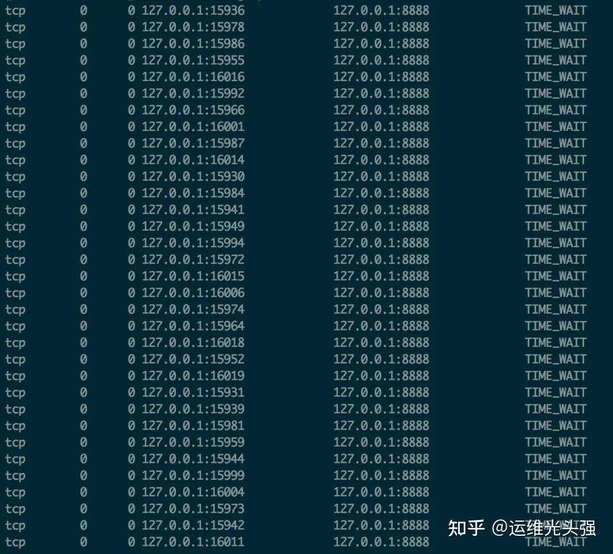

写在开头，大概 4 年前，听到运维同学提到 TIME_WAIT 状态的 TCP 连接过多的问题，但是当时没有去细琢磨；最近又听人说起，是一个新手进行压测过程中，遇到的问题，因此，花点时间，细深究一下。
从这几个方面着手：
问题描述：什么现象？什么影响？
- 问题分析
- 解决方案
- 底层原理
1、问题描述
模拟高并发的场景，会出现批量的 TIME_WAIT 的 TCP 连接：

短时间后，所有的 TIME_WAIT 全都消失，被回收，端口包括服务，均正常。即，在高并发的场景下，TIME_WAIT 连接存在，属于正常现象。
线上场景中，持续的高并发场景：
一部分 TIME_WAIT 连接被回收，但新的 TIME_WAIT 连接产生；
一些极端情况下，会出现大量的 TIME_WAIT 连接。
Think：上述大量的 TIME_WAIT 状态 TCP 连接，有什么业务上的影响吗？
Nginx 作为反向代理时，大量的短链接，可能导致 Nginx 上的 TCP 连接处于 time_wait 状态：
1.每一个 time_wait 状态，都会占用一个「本地端口」，上限为 65535(16 bit，2 Byte)；
2.当大量的连接处于 time_wait 时，新建立 TCP 连接会出错，address already in use : connect 异常
统计 TCP 连接的状态：
1 | // 统计：各种连接的数量 |
Tips：TCP 本地端口数量，上限为 65535（6.5w），这是因为 TCP 头部使用 16 bit，存储「端口号」，因此约束上限为 65535。
2、问题分析
大量的 TIME_WAIT 状态 TCP 连接存在，其本质原因是什么？
1.大量的短连接存在
2.特别是 HTTP 请求中，如果 connection 头部取值被设置为 close 时，基本都由「服务端」发起主动关闭连接
3.而，TCP 四次挥手关闭连接机制中，为了保证 ACK 重发和丢弃延迟数据，设置 time_wait 为 2 倍的 MSL（报文最大存活时间）
TIME_WAIT 状态：
1.TCP 连接中，主动关闭连接的一方出现的状态；（收到 FIN 命令，进入 TIME_WAIT 状态，并返回 ACK 命令）
2.保持 2 个 MSL 时间，即，4 分钟；（MSL 为 2 分钟）
3、解决办法
解决上述 time_wait 状态大量存在，导致新连接创建失败的问题，一般解决办法：
1.客户端，HTTP 请求的头部，connection 设置为 keep-alive，保持存活一段时间：现在的浏览器，一般都这么进行了
2.服务器端 允许 time_wait 状态的 socket 被重用 缩减 time_wait 时间，设置为 1 MSL（即，2 mins）
结论：几个核心要点
1.time_wait 状态的影响：
TCP 连接中，「主动发起关闭连接」的一端，会进入 time_wait 状态
time_wait 状态，默认会持续 2 MSL（报文的最大生存时间），一般是 2x2 mins
time_wait 状态下，TCP 连接占用的端口，无法被再次使用
TCP 端口数量，上限是 6.5w（65535，16 bit）
大量 time_wait 状态存在，会导致新建 TCP 连接会出错，address already in use : connect 异常
2.现实场景：
服务器端，一般设置：不允许「主动关闭连接」
但 HTTP 请求中，http 头部 connection 参数，可能设置为 close，则，服务端处理完请求会主动关闭 TCP 连接
现在浏览器中， HTTP 请求 connection 参数，一般都设置为 keep-alive
Nginx 反向代理场景中，可能出现大量短链接，服务器端，可能存在
3.解决办法：
服务器端允许 time_wait 状态的 socket 被重用
缩减 time_wait 时间，设置为 1 MSL（即，2 mins）
4、附录 - 底层原理
几个方面：
1.TCP 连接状态的查询
2.MSL 时间
3.TCP 三次握手和四次握手
附录 A：查询 TCP 连接状态
1 | Mac 下，查询 TCP 连接状态的具体命令： |
附录 B：MSL 时间MSL，Maximum Segment Lifetime，“报文最大生存时间”
1.任何报文在网络上存在的最长时间，超过这个时间报文将被丢弃。（IP 报文）
2.TCP报文 （segment）是ip数据报（datagram）的数据部分。
Tips：RFC 793中规定MSL为2分钟，实际应用中常用的是30秒，1分钟和2分钟等。
2MSL，TCP 的 TIME_WAIT 状态，也称为2MSL等待状态：
1.当TCP的一端发起主动关闭（收到 FIN 请求），在发出最后一个ACK 响应后，即第3次握 手完成后，发送了第四次握手的ACK包后，就进入了TIME_WAIT状态。
2.必须在此状态上停留两倍的MSL时间，等待2MSL时间主要目的是怕最后一个 ACK包对方没收到，那么对方在超时后将重发第三次握手的FIN包，主动关闭端接到重发的FIN包后，可以再发一个ACK应答包。
3.在 TIME_WAIT 状态时，两端的端口不能使用，要等到2MSL时间结束，才可继续使用。（IP 层）
4.当连接处于2MSL等待阶段时，任何迟到的报文段都将被丢弃。
不过在实际应用中，可以通过设置 「SO_REUSEADDR选项」，达到不必等待2MSL时间结束，即可使用被占用的端口。
附录 C：TCP 三次握手和四次握手
具体示意图：
- 1.三次握手，建立连接过程
- 2.四次挥手，释放连接过程

几个核心疑问：
1.time_wait 是「服务器端」的状态？or 「客户端」的状态？
RE：time_wait 是「主动关闭 TCP 连接」一方的状态，可能是「客服端」的，也可能是「服务器端」的；
一般情况下，都是「客户端」所处的状态；「服务器端」一般设置「不主动关闭连接」。
2.服务器在对外服务时，是「客户端」发起的断开连接？还是「服务器」发起的断开连接？
正常情况下，都是「客户端」发起的断开连接；
「服务器」一般设置为「不主动关闭连接」，服务器通常执行「被动关闭」；
但 HTTP 请求中，http 头部 connection 参数，可能设置为 close，则，服务端处理完请求会主动关闭 TCP 连接，
关于 HTTP 请求中，设置的主动关闭 TCP 连接的机制：TIME_WAIT的是主动断开方才会出现的，所以主动断开方是服务端？
1.答案是是的。在HTTP1.1协议中，有个 Connection 头，Connection有两个值，close和keep-alive，这个头就相当于客户端告诉服务端，服务端你执行完成请求之后，是关闭连接还是保持连接，保持连接就意味着在保持连接期间，只能由客户端主动断开连接。还有一个keep-alive的头，设置的值就代表了服务端保持连接保持多久。
2.HTTP默认的Connection值为close，那么就意味着关闭请求的一方几乎都会是由服务端这边发起的。那么这个服务端产生TIME_WAIT过多的情况就很正常了。
3.虽然HTTP默认Connection值为close，但是，现在的浏览器发送请求的时候一般都会设置Connection为keep-alive了。所以，也有人说，现在没有必要通过调整参数来使TIME_WAIT降低了。
关于 time_wait：
1.TCP 连接建立后，「主动关闭连接」的一端，收到对方的 FIN 请求后，发送 ACK 响应，会处于 time_wait 状态；
2.time_wait 状态，存在的必要性：
a、 可靠的实现 TCP 全双工连接的终止：四次挥手关闭 TCP 连接过程中，最后的 ACK 是由「主动关闭连接」的一端发出的，如果这个 ACK 丢失，则，对方会重发 FIN 请求，因此，在「主动关闭连接」的一段，需要维护一个 time_wait 状态，处理对方重发的 FIN 请求；
b、 处理延迟到达的报文：由于路由器可能抖动，TCP 报文会延迟到达，为了避免「延迟到达的 TCP 报文」被误认为是「新 TCP 连接」的数据，则，需要在允许新创建 TCP 连接之前，保持一个不可用的状态，等待所有延迟报文的消失，一般设置为 2 倍的 MSL（报文的最大生存时间），解决「延迟达到的 TCP 报文」问题。
文章转载：DevOps技术栈